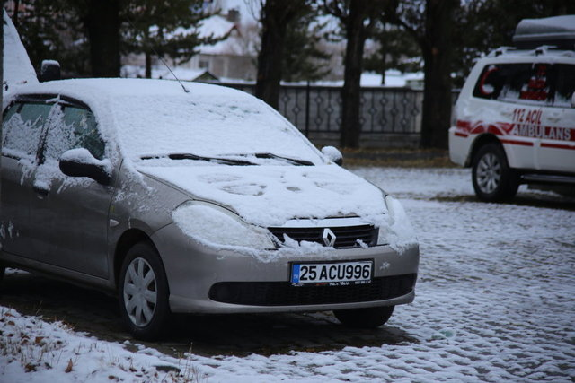

12 Ay Sonrası Enflasyon Beklentileri
2023 yılı Kasım ayı anket döneminde, katılımcıların 24 ay sonrasına ilişkin olasılık tahminleri
değerlendirildiğinde, TÜFE'nin ortalama olarak yüzde 29,62 olasılıkla yüzde 18,00 – 22,99 aralığında, yüzde
36,70 olasılıkla yüzde 23,00 – 27,99 aralığında, yüzde 25,78 olasılıkla ise yüzde 28,00 – 32,99 aralığında artış
göstereceği öngörülmektedir.
Aynı anket döneminde nokta tahminler esas alınarak yapılan değerlendirmeye göre, 24 ay sonrası TÜFE enflasyonu
beklentileri değerlendirildiğinde, katılımcıların yüzde 30,00‘ının beklentilerinin yüzde 18,00 - 22,99
aralığında, yüzde 36,67‘sinin beklentilerinin yüzde 23,00 – 27,99 aralığında, yüzde 25,00‘ının beklentilerinin
yüzde 28,00 – 32,99 aralığında olduğu gözlenmektedir

Doğu'daki bazı illerde kış tipiyle birlikte geldi!
Türkiye soğuk havaların etkisi altına girdi. Doğu Anadolu'da da mevsimin ilk karı yağdı. Van ve Ardahan'da yoğun kar yağışı nedeniyle tipi meydana geldi
Ardahan'da kar yağışı ve tipinin oluşturduğu buzlanma, ulaşımda aksamalara neden oldu, birçok tır yolda kaldı.
Yüksekler kesimlerde zaman zaman etkisini artıran kar, bazı noktalarda tipi ve buzlanmaya dönüştü.
Buzlanma, Ardahan'ı Karadeniz bölgesine bağlayan Ardahan-Şavşat kara yolunun Sahara mevkisinde ulaşımı aksattı.
Blinken'dan, İsrail'e Batı Şeria'daki işgalci şiddeti için acil önlem çağrısı
ABD Dışişleri Bakanlığından yapılan yazılı açıklamada, Blinken'ın, Gantz ile telefon görüşmesi gerçekleştirdiği bildirildi.
Görüşmede, Gazze'ye insani yardım ihtiyaçlarının bir an önce ulaştırılmasının öneminin vurgulandığı aktarılan açıklamada, ABD vatandaşları dahil rehinelerin salıverilmesinin ele alındığı kaydedildi.
Açıklamada, "Bakan Blinken, yerleşimcilerin aşırılıkçı şiddetinin artan seviyeleriyle mücadele etmek de dahil Batı Şeria'da gerilimin azaltılması için kesin adımlar atılmasının önemini vurguladı." ifadesine yer verildi.
Ayrıca Blinken'ın görüşmede ABD'nin iki devletli çözüme bağlılığını bir kez daha dile getirdiği kaydedildi.